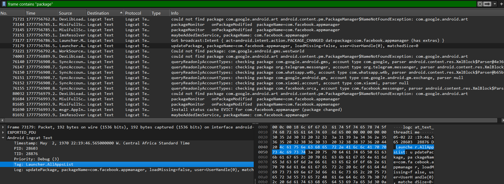
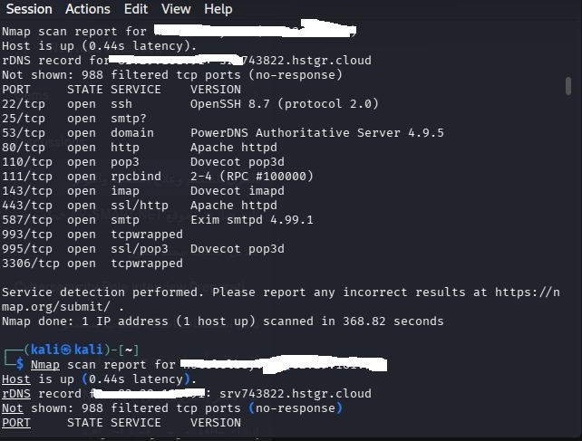
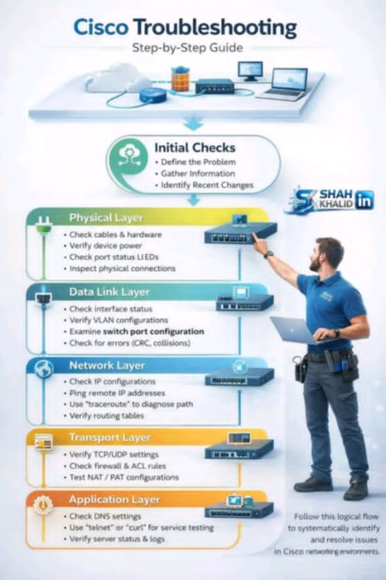
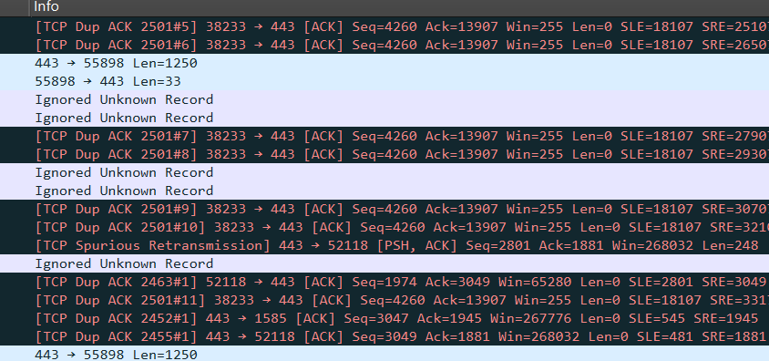
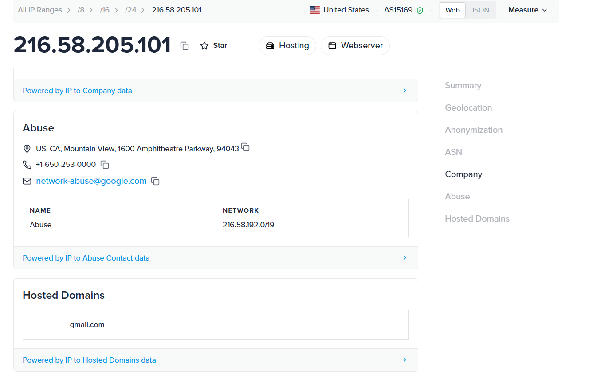

🔬 Cybersecurity Home Lab
🔍 Lab: Home Network Security Audit
Tools: Nmap, Zenmap, VMware
🔍 Lab: Mobile Traffic Analysis & Forensic Audit
Tools: Wireshark, ADB (Android Debug Bridge), Npcap, Androiddump
1. Mobile Endpoint Integration
Connecting a Redmi 9A device via ADB to perform real-time packet sniffing and system log analysis.
2. Traffic & Log Analysis
Monitoring background processes and third-party app behaviors (Facebook, WhatsApp, Telegram) using advanced Wireshark display filters.

- Security Audit: Identified multiple
Permission Deniedevents andSELinuxpolicy violations. - Package Monitoring: Analyzed
com.facebook.appmanagerbackground activities and system resource requests. - Forensic Filtering: Applied
frame containsfilters to isolate credential-related strings and system errors.
1. Services Enumeration
Scanning the default gateway (192.16...) to identify active services.
Scanning the target (82.2.1.) to identify active services and version banners.

- Information Disclosure: Exposed service versions (OpenSSH 8.7, Exim 4.99.1).
- Insecure Port Configuration: Port 3306 (MySQL) open to the public internet.
- RPC Exposure: Port 111 (rpcbind) active, leaking system metadata.
2. Vulnerability Discovery (CVE-2011-3192)
Detected a critical Denial of Service vulnerability in the router firmware using NSE scripts.
.png)
3. Lab Hardening
Configured Virtual Machines to NAT Mode for secure environment isolation.
🔍 Lab: Cisco Troubleshooting Guide based on OSI Model
الهدف: توثيق خطوات استكشاف وإصلاح الأخطاء المنهجية في بيئات سيسكو.

خطوات التحقق المنهجي (Initial Checks):
- تعريف المشكلة بدقة (Define the Problem).
- جمع المعلومات التقنية اللازمة (Gather Information).
- تحديد التغييرات الأخيرة في الشبكة (Identify Recent Changes).
التسلسل الهرمي للإصلاح:
يتبع هذا الدليل تدفقاً منطقياً يبدأ من الطبقة الفيزيائية (Physical Layer) صعوداً إلى طبقة التطبيقات (Application Layer) لضمان حل المشكلات من الجذور.
🔍 Lab: Network Traffic & TCP Protocol Analysis
Tools: Wireshark, TCPDump, Network Monitoring
1. Traffic Capture & Inspection
Capturing live HTTPS traffic on port 443 to monitor handshake stability and data integrity.
2. Advanced TCP Diagnostics
Identified critical network patterns: TCP Dup ACKs and Spurious Retransmissions, indicating packet loss and congestion issues in the communication path.

3. Remediation & Optimization
Proposed network tuning strategies to minimize latency and ensure reliable data delivery for critical infrastructures.
Read Full Article on LinkedIn🌐 Geographic & Ownership Identification (OSINT)
After identifying the anomalies, I performed an OSINT lookup on the target IP to verify the source and reputation of the traffic.
- 🔹 ASN: AS15169 — Google LLC
- 🔹 Domain: google.com
- 🔹 Location: External Hosting Infrastructure

Conclusion: The diagnostic confirms that the TCP Retransmission issues occur within the local network path or ISP, as the destination is a high-availability Google infrastructure.
Penetration Testing Environment
Equipped with Kali Linux and Parrot OS in a virtualized VMware environment. Focused on practicing advanced reconnaissance, vulnerability assessment, and exploitation techniques.
التقارير التقنية
تقرير: بروتوكول TR-069 وآلية الاستجابة الأمنية
تحليل شامل لمنهجية إدارة أجهزة المودم عن بُعد ومعالجة ثغرة CVE-2011-3192.
عرض التقرير (PDF)Professional Certifications
Getting Started with Cisco Packet Tracer
Cisco Academy | Mar 13, 2026
CCNA Preparation
Method: Anki Active Recall
Current: Day 01 - Network Devices
Jeremy's IT Lab Curriculum
CCNA Preparation (Anki)
Current: Day 01 - Network Devices
Active Recall Method